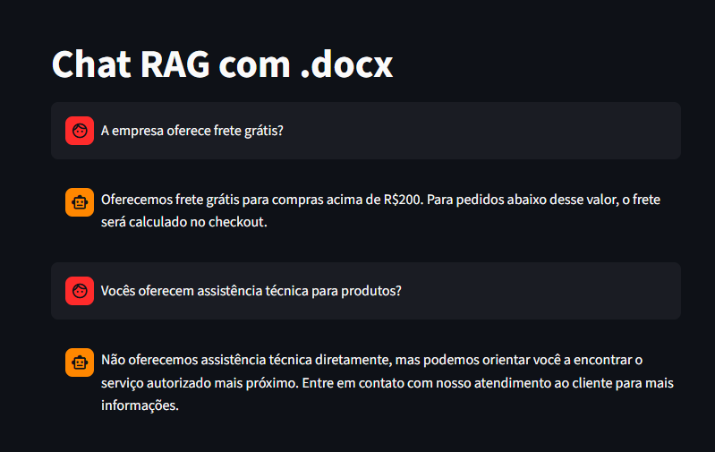
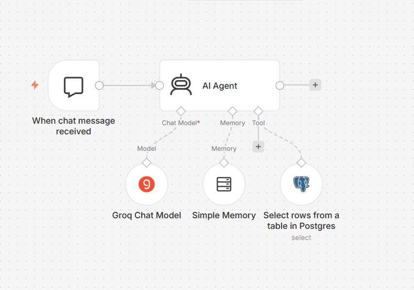

Automação & Engenharia de Dados

Artificial Intelligence
Sistemas RAG em Python
Desenvolvimento de arquiteturas de Geração Aumentada de Recuperação (RAG) para leitura analítica, consulta inteligente e extração automatizada de insights em documentações complexas.

Data Engineering
Engenharia de Dados com Pentaho
Modelagem e execução de pipelines de dados estruturados (Extração, Transformação e Carga) integrando múltiplas fontes descentralizadas para bancos relacionais SQL.

Automation
Workflows Inteligentes no n8n
Construção de fluxos de trabalho assíncronos e integração ponta a ponta de APIs corporativas para eliminação de gargalos operacionais e automação de rotas manuais.